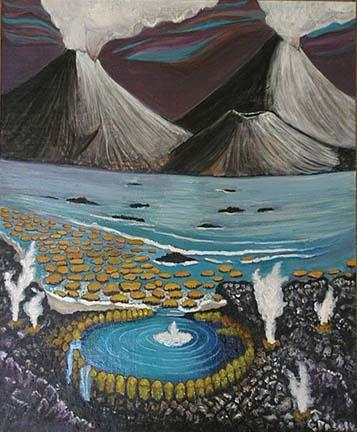
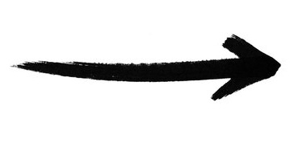

The remarkable and sophisticated visual intelligence around us has very
humble beginnings.
The first light-detecting cells were likely simple photoreceptors,
and the evolution of eyes has been a journey of increasing complexity
against the backdrop of natural selection. But what if vision was only
used for navigation or detection? What if eyes never evolved optical
elements like lenses? What if animal brains stayed small throughout
evolution? Answering these questions or testing these causal hypotheses
would require us to re-run evolution. But What if there was
a tool to instead simulate alternative paths that evolution didn’t take?
Let's try to build this tool.

The painting, by G. Paselk, is an interpretation of the
Precambrian mural at the Natural History Museum of the
Smithsonian Institute.

Diveristy of animal eyes and animal visual intelligence.
Each animal here has found a unique solution to the problem of
visual intelligence: how to see and how to act in your
environment.
To ask what-if questions about vision evoltuion, we must model the
evolutionary process in our embodied agents, allow for
genetic mutation and selection through environment feedback. The digital
anatomy of our agents allows for this.
We mirror natural selection in the following way:
an outer loop governs genetic inheritance and selection over
evolutionary timescales, while an
inner loop enables agents to learn via deep reinforcement learning
through sensory feedback (lifetime adaptation). This nested
structure reflects the Baldwin effect, where lifetime learning can guide
and accelerate evolutionary adaptation. The key here is
that this allows the co-evolution of vision and behavior.
The genetic encoding of the agent enables vision evolution. It mirrors
the natural separation between sensory and neural development
through three gene clusters with 10 20 unique configurations
in total. These are co-evolved based on direct feedback from the agent's
behavior- similar to natural evolution.
We create three tasks or games based on visual tasks that real animals
face and had to overcome to survive. These are:
Orientation, Obstacle Avoidance and Navigation
Food (Green) & Poison (Red) Discrimination (green and red are
not visible to the agent)
Prey (Green) & Predator (Red) Tracking (green and red are not
visible to the agent)
In this way, each environment represents a single task which models the
functional pressures hypothesized to garner the emergence of vision.
Orientation & Navigation
Food & Poison Discrimination
Prey Tracking
Now let's use this computational framework for vision evolution to test
hypotheses about how specific environmental pressures shape our emobided
agent's
eye morphologies, neural architectures, and behavior.